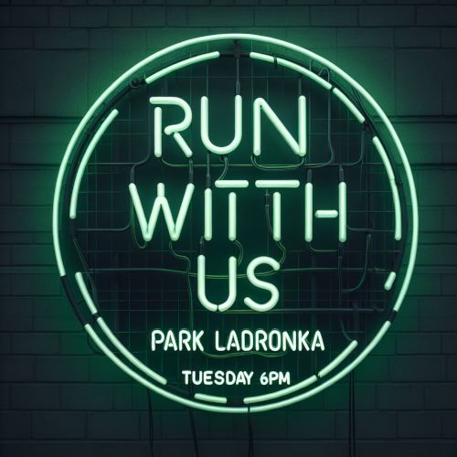

--- 
layout: sablona.njk 
title: Úvodní stránka 
---

<!-- ↑↑↑ odtud nahoru je vrchní část společná pro všechny stránky na webu -->


<!-- sekce o ROOOT -->


<section class="about">

    <div class="about__image"></div>

    <div class="about__content">
        <h2>Running out of Thyme, zkráceně ROOT</h2>
        <p>je název běžeckého týmu, který vznikl v roce 2020 jako iniciativa třech kamarádů, kteří spolu chtěli trávit více času. V průběhu let se k našim třem běžcům postupně přidávali další a další kamarádi. Dnes je registrovaných na 100 nadšenců, kteří společně rádi vyběhnout do přírody v okolí svých domovů, ale i do vzdálenějších koutů republiky nebo za hranice, kamkoli je láska k běhání táhne.
        Každoročně se tým ROOT účastní dobročinných akcí, kdy za své naběhané kilometry posílá peníze těm, kteří je nejvíce potřebují.</p>
    </div>

    <div class="about__grid">
        
        <div class="grid__column">
            
            <p>Vyběhni s námi každé úterý od šesti z parku Ladronka</p>
        </div>

        <div class="grid__column">
            
            <p>Už nás je víc než sto, přidej se k nám</p>
        </div>

        <div class="grid__column">
        
        <p>Máme srdce na dlani, peníze za naběhané kilometry posíláme potřebným.</p>
        </div>

        
        <div class="grid__column">
            
            <p>Pravidelně spolu vyrážíme na běžecké akce v Čechách i v zahraničí</p>
            </div>
    </div>

</section>
<!-- konec sekce o ROOT -->


	<!-- ↓↓↓ odtud dolů je spodní část společná pro všechny stránky na webu -->
    
